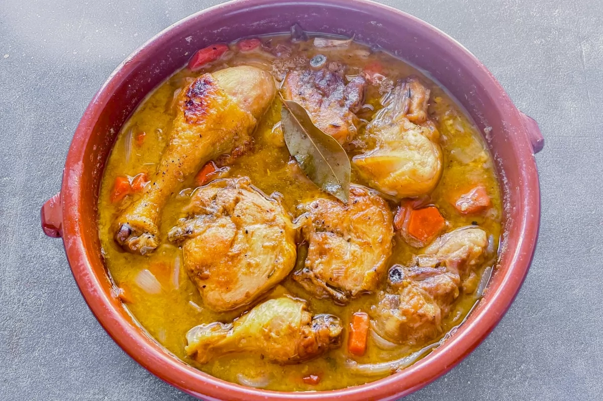
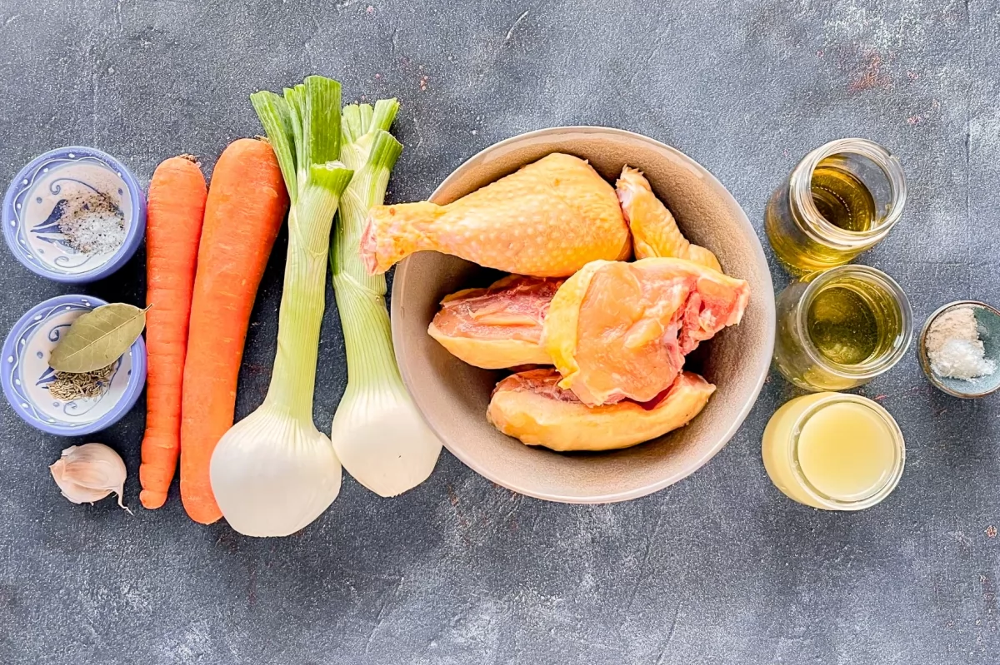
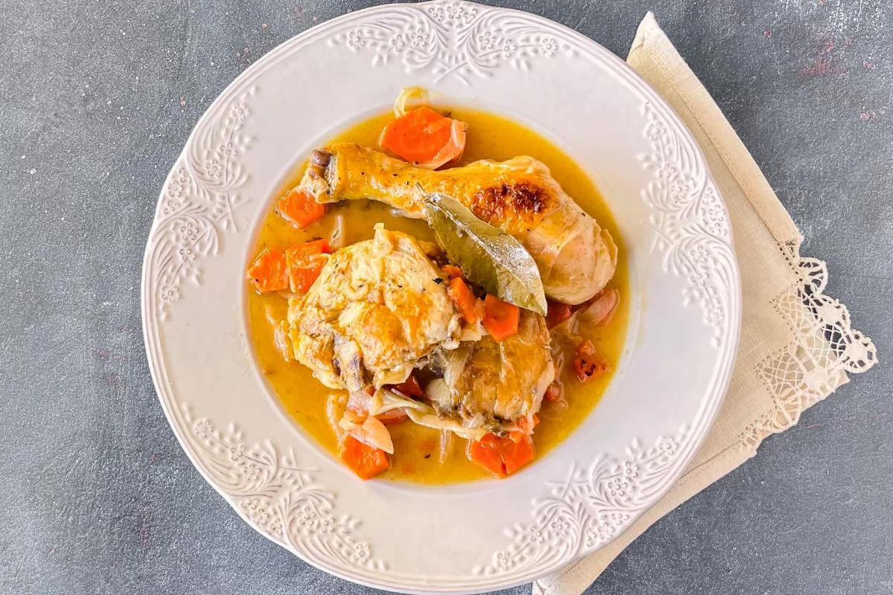

Pollo en salsa
Recetas
>> Pollo en salsa
¿Que es?
¿Que necesito?
¿Como se hace?
Información Destacada
- Tiempo de preparación: 5 mins
- Tiempo de cocinado: 40 mins
- Tiempo total: 45 mins
- Raciones: 4
- Categoría: Plato Principal
- Tipo de cocina: Española
- Calorias por ración: 615 kcal

Ingredientes para 4 personas
- 30 ml de aceite de oliva virgen extra
- 1 kg de pollo campero troceado
- Sal
- Pimienta negra molida
- 2 cebollas tiernas
- 2 dientes de ajo
- 2 zanahorias
- 1 hoja de laurel
- 1 cucharadita de tomillo
- 1 cucharadita de orégano
- 1 cucharada de harina de trigo
- 125 ml de vino blanco seco
- 350 ml de caldo de pollo casero

Preparación
Tienes que seguir los siguientes pasos:
- Sellar el pollo salpimentado hasta que esté dorado por todos sus lados
- Sofreír las cebollas cortadas en pluma, los dientes de ajo en camisa y las zanahorias en rodajas gruesas, junto a la hoja de laurel
- Añadir el tomillo, el orégano y la cucharadita de harina, y remover hasta que la harina esté cocinada
- Introducir el pollo en la cazuela, añadir el vino blanco y cocinar durante 5 minutos a fuego fuerte
- Cubrir con el caldo de pollo y cocinar a fuego suave durante 35 minutos
- Si es posible, dejar reposar unas horas en la nevera para que se intensifiquen sus sabores
